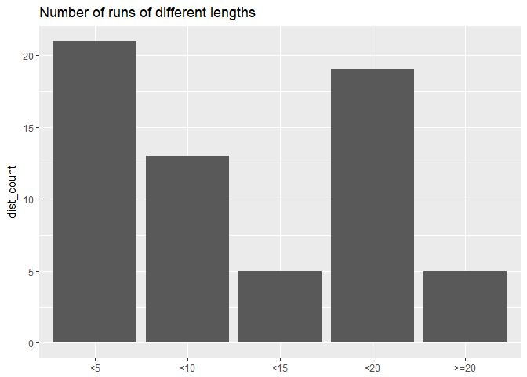

Hello everybody, I have a new run data analysis today: from my own strava data! I have been much slower recently on the posts, I will probably be until the end of july, because of work for my PhD, so I’m sorry about that. I am using the rStrava package and the tutorial in its readme file to get my strava data and see how much my running has changed since a year ago when I started. As usual the code will be on my github if you want to give it a go with you own data. I am a little self conscious about showing my running data, but I know both the R and the running communities are amazing, so I am hoping for not too much judgement at my really slow pace! Anyway, let’s look at my data.
Month by month total distance run
I can check month by month how many kilometers I’ve run total which allows me to see how I’ve done so far in the past year and how I’ve evolved.
I ran fewer km than I remember in september. It was when I did my first races, and I felt really good about finishing them, especially the vertical race in Grenoble during which I had a hypoglycemia problem halfway through and just hung on for the rest. Other months around that were bad… I registered for my first half marathon on the 31st of december, and I got straight into training for that in January, and I must’ve freaked out because I ran a lot! In February I had a lot of work and it decreased. And then I freaked out again in March because I had less than a month to train! In April I ran 2 half marathons. May and June, I wanted to rest a bit, but still ran reasonably well. July just started so it’s a little lower but I feel good so I’m probably going to run well. I’m not too unhappy with this data, although the number of km run seems to be decreasing month to month this year, and I didn’t realize that, so now I can try to make adjustments to get my training to where I want it to be. I don’t have any races planned yet until end of August, so I can train more.
Evolution of time vs distance
On these figures we look at how my time evolves with distance, first point by point, then in a general linear regression model, and then in linear models for each month to see if there is a change from month to month. Times are in minutes and distances are in km. Colors represent different months.

The increase in time according to distance is pretty linear until the distance goes above 20km but as I haven’t done that kind of distance too much, and I’ve pretty much only done it in races, so it’s not too representative I think. Also the 27k run I’ve done last week is really outside the tendency of the curve, because we were wasting time finding our way. I want to do it again on a path I know better to see how we can bring that time down. Another thing I’ve noticed before seeing the data is I feel much slower these summer months than I was in the spring, and I’m not completely sure why, maybe a combination of warmer weather and accumulated fatigue. On the next plot I did linear regression curve for each month:

We confirm what I saw before, the lines for the summer months are higher than the spring months, showing that I’ve slowed down. Especially this month with the 27k outlier, the coefficient is much higher.
Evolution of distances run
When I started running in april 2017, my longest distances were under 5 km. I still remember my first long runs at 5k around this time last year, and now I’ve completed a 27km run. I can’t wait to see what it’ll be in a year! Let’s see how my distance has evolved from month to month:
On this plot we don’t see the months I didn’t record anything on strava. Those are the months I didn’t run much anyways. It also went up in distance up until april where I did my two half marathons, and then I took some rest from the difference until this month.
Evolution of max distance
Evolution of number of runs in a month vs amount of km run
I want to put on the same plot my total km run and the number of runs done. Down here, in red is the total km run in a month, and in blue is the number of runs done.
The scale fits better the total km run, but we can still see that number of runs and distance are completely correlated, although the lines don’t fit 100%. This makes total sense, especially at my level where I don’t do huge distances.
Most run distances
I want to see what kind of distance I run most often with this next plot:

For now, I’ve run much more in the smallest distances, but I’ve run almost as much in <5km than between 15 and 20k, I don’t do too much in between, which I didn’t realize before, I thought the longer the distance, the less I would’ve run it.
Distance boxplot month to month
This boxplot is another way to look at how my running changes from month to month, the larger the box is, the more diverse the distances.
Some months are higher than others overall, we’ve seen that already, and we have a few outliers that show that I went outside the tendency. In January is when I ran the most, but the box is quite small and the mean lower than 10 km, meaning I’ve done some short distances a lot of times. In april I have a high mean and a wide box, because I ran much longer distances, but fewer times. In May and June this year, the means are much lower, I ran much smaller distances, which explains the overall km drop from the plots above.
Conclusion
That’s all for today! I thoroughly enjoyed this because it is my own data, and I learned something new on myself, and it’s given me even more motivation to train! I have noticed physical changes since I began running last year, I’ve gained a lot of muscle in my legs, they’ve become really defined and visible, mostly due to trail running rather than road running, and I didn’t even think of that when I started so it’s pretty cool. I need to do some strength work for my upper body next, so I’ll be a better runner. Right now I am starting a 10k a day challenge, just for fun, I’ll report back on that soon. I haven’t decided for how long yet. I hope you’ve enjoyed today’s analysis, I encourage you to run the code on your own strava data, it’s very fun to do. Message me if you do! In the meantime, have fun on the trails, see you soon sciathletes!
Sciathlete